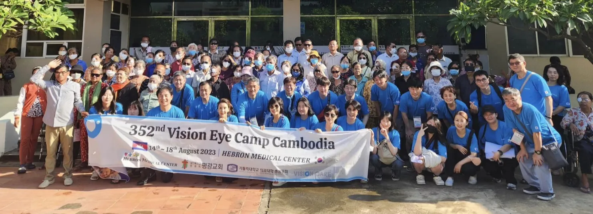
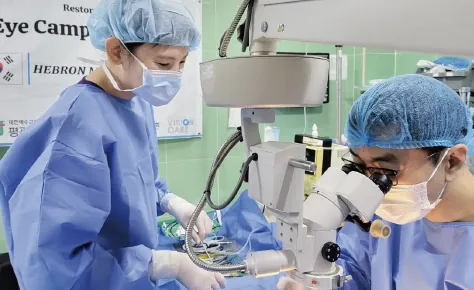
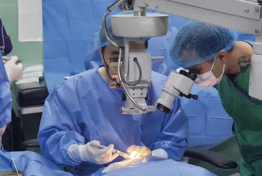

2023년 8월 12일부터 19일까지 캄보디아의 수도 프놈펜에 있는 헤브론병원에서 비전아이캠프가 개최되었습니다. 올해 센트럴서울안과에서는 저와 수술팀 이샤론, 외래팀 현승언, 검안팀 김아름 선생이 참가했습니다.

비전아이캠프는 실명구호활동을 하는 비정부기구(NGO) 비전케어에서 진행하는 사업 중 하나입니다. 의료 환경이 열악한 지역의 실명 원인으로 가장 중요한 부분을 차지하는 것은 백내장입니다. 국내에서는 수술받으면 시력을 회복할 수 있지만, 저개발국가에서는 그렇지 않습니다. 비전케어는 기부자의 후원금과 자원봉사자의 재능기부를 조직화해 현장으로 의료진을 파견하고 백내장 수술로 실명 위기에 있는 사람을 구합니다.
비전케어의 미션에 공감하여 저희 병원은 2017년 이후 다섯 차례에 걸쳐 의료진을 포함한 병원 구성원을 비전아이캠프에 파견했습니다. 이번 프놈펜 캠프는 제 개인적으로는 세 번째 참가이며, 코로나19 이후 4년 만에 진행된 해외 비전아이캠프라 준비 단계부터 많이 긴장했습니다.

현지에서 만난 환자들의 눈 상태는 중국 캠프 때보다 훨씬 심했습니다. 수술 난이도 자체가 어려운 분이 많았습니다. 특히 셋째 날 만난 한 환자는 양쪽 눈 모두 심한 백내장과 녹내장을 가지고 있었고, 수술이 제가 원하는 대로 진행되지 않아 다소 당황스러운 상황에 처할 수도 있을 것 같았습니다.
저는 가톨릭 신자입니다. 어려운 수술이 잘 풀리지 않을 때 수술 중 기도문으로 외는 성경 구절이 있습니다.
나에게 힘을 주시는 분 안에서 나는 모든 것을 할 수 있습니다.
필리피서 4, 13
삶 속에서 우리는 가끔 사람의 힘으로 풀기 어려운 순간을 만나곤 합니다. 곁에 도와주는 누군가가 있을 때는 해결이 조금 더 쉬워지지만, 누구도 곁에 없을 때 기도가 늘 큰 도움이 되었습니다. 기도 덕분인지 어려웠던 수술은 무사히 끝났고, 다음 날 환자 상태도 호전되었습니다.

캠프 일정 나흘간 백내장 수술 99안을 비롯한 120건의 안과 수술을 진행했고 많은 사람이 행복해했습니다. 이번 비전아이캠프는 다른 사람을 도와주는 것뿐 아니라 저 자신을 돌이켜보고 앞으로 나아가야 할 길을 생각하게 해 준 소중한 기회였습니다. 이 모든 순간은 저희를 믿어주고 도와주는 고객 여러분과 구성원들이 함께 만들어 준 것이라는 점도 잘 알고 있습니다. 더 많은 분이 비전케어에 관심을 가져 준다면 더욱 행복할 것 같습니다.
비전케어 홈페이지 www.vcs2020.org